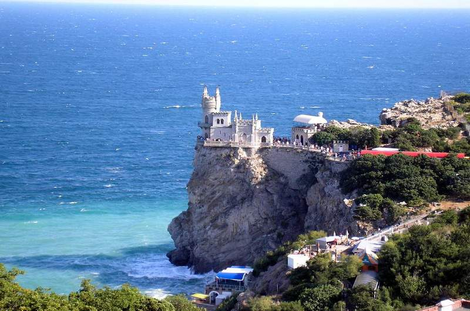
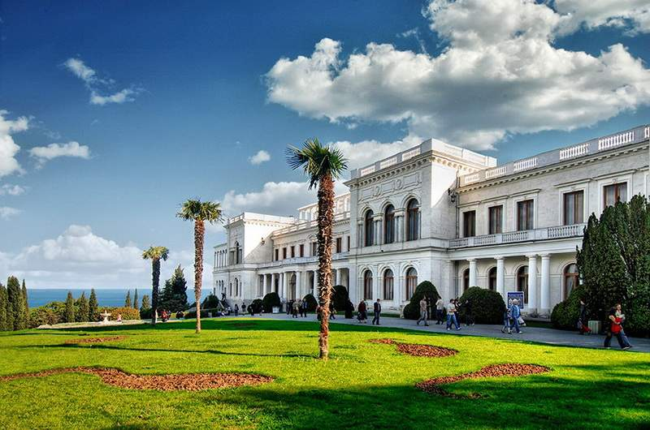
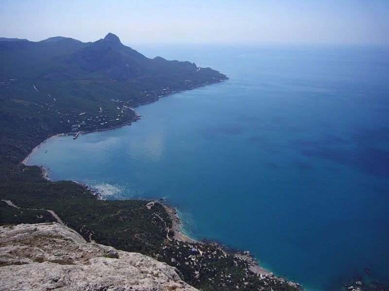
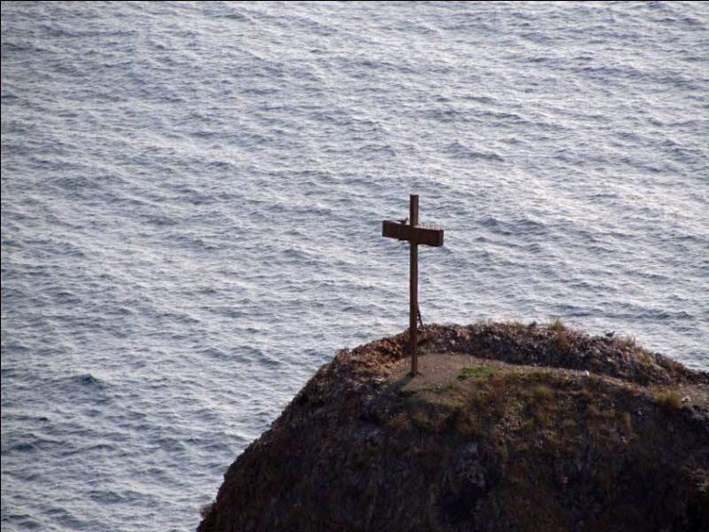
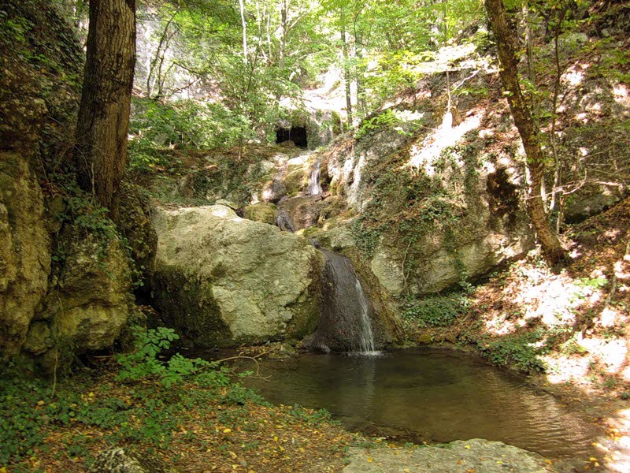
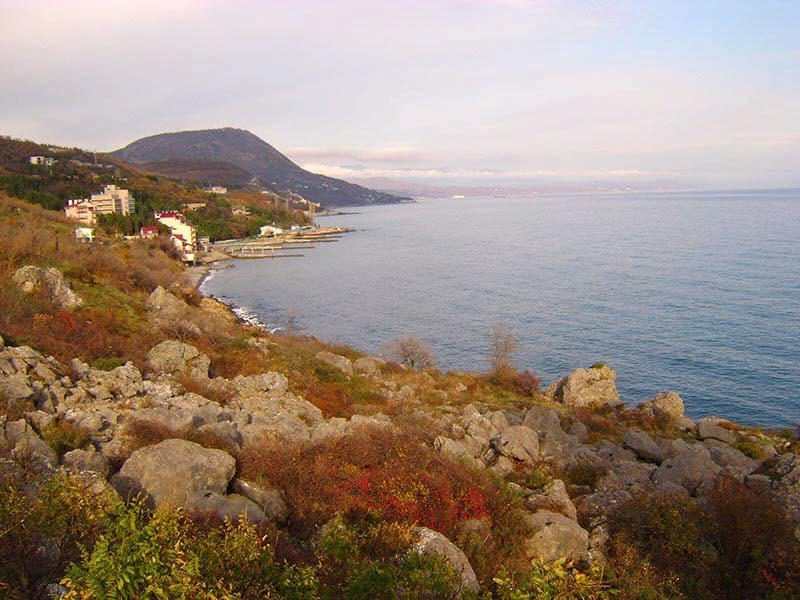
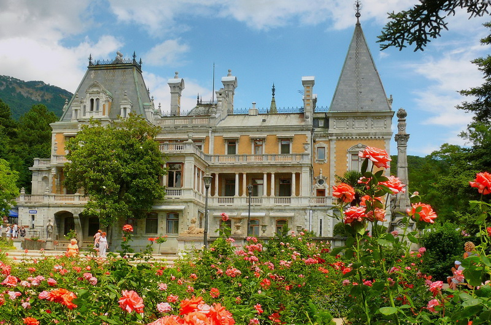
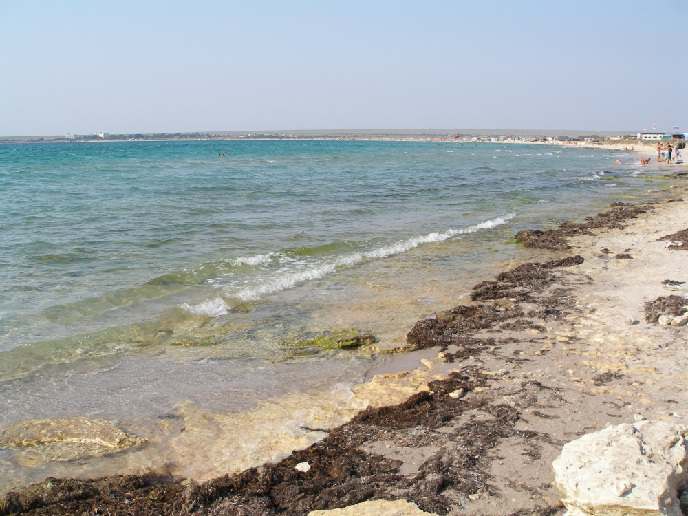
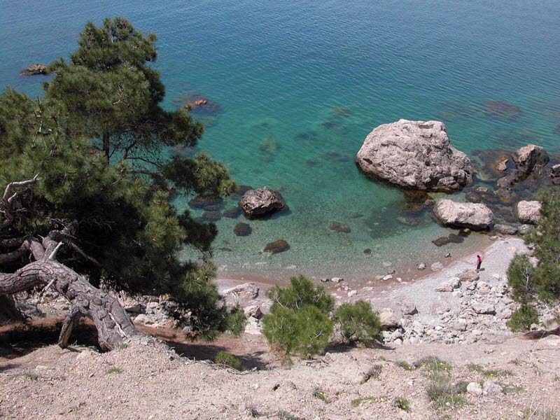
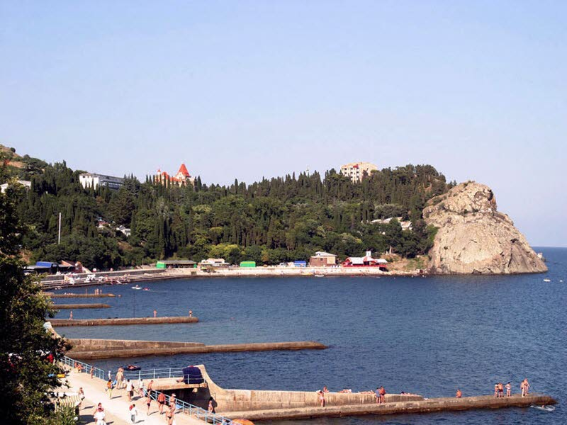

Ласточкино гнездо
Ласточкино гнездо — едва ли не самая посещаемая крымская достопримечательность. Этот архитектурный и исторический памятник, выполненный в стилистике средневекового замка, нависает с 40-метровой скалы на мысе Ай-Тодор близ Ялты. Ласточкино гнездо уже давно считается символом полуострова несмотря на то, что имеет, в общем-то, не такую и богатую историю: свой окончательный вид это сооружение получило в 30-е гг. прошлого века.

Ливадийский дворец
Ливадийский дворец в Крыму - лучший дворцовый ансамбль полуострова. Ливадийский дворец считался главной резиденцией императора Николая II.

Мыс Сарыч
Между поселком Форос и бухтой Ласпи находится самый южный в географическом плане мыс Кымского полуострова и Украины в целом Сарыч. Если ехать по трассе из Ялты в Севастополь, то поворот к мысу Сарыч будет находиться на 46-м километре.

Скала Крест или скала Крестовая
Неподалеку от мыса Фиолент из воды выглядывает небольшая скала, имеющая разные названия, но наиболее распространено – скала Крест. От берега до скалы 140 метров. Многие отдыхающие на Яшмовом пляже любуются этим прекрасным творением природы.

Балка Сотера
Чуть восточнее Алушты находится государственный памятник Крымской природы, заповедное урочище балка Сотера. Название местности пошло со Средних веков, когда в балке располагался христианский храм Христа Спасителя. На греческом языке Сотер значит Спаситель.

Кучук-Ламбатский хаос
Своеобразным природным памятником и оригинальной достопримечательностью в окрестностях Алушты является Кучук-Ламбатский хаос. Это поросшее мелким лесом беспорядочное нагромождение каменных обломков расположено между поселками Бондаренково и Утес.

Массандровский дворец
По замыслу французского архитектора Этьена Бушара здание должно было напоминать королевские дворцы-замки, строившиеся на протяжении XVI-XIX вв. вдоль берегов реки Луары. Дворец достраивался для императора Александра III, хотя ему так и не удалось увидеть дворец в завершенном виде. По желанию его сына, Николая II, строительство дворца было завершено и в память об отце дворец сохранил его имя. Марсанда раньше было греческой деревушкой, жители которой в 1778 году были переселены в Мариупольский уезд. В 1948 году дворец переоборудовали в тщательно охраняемую госдачу, куда дважды на отдых приезжал И.В. Сталин, а также Н.С. Хрущев и Л.И. Брежнев..

Мыс Тарханкут
Тарханкут — популярное место для дайверов, виндсёрферов, кайтеров и просто любителей попрыгать со скал в прозрачную чистую воду. Отдых на Тарханкуте выбирают те, кому надоела курортная суета крупных курортов и хочется тишины и звездного неба.

Урочище Аязьма
Крымское урочище Аязьма, что в Балаклаве, недаром считается одним из самых красивых уголков Крымского побережья. Этот природный уголок Крымского полуострова не схож ни с одним местом всего Южного Берега, и, следовательно, стал индивидуальным урочищем.
